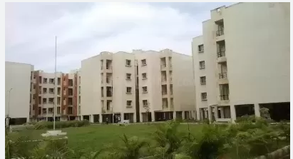

Kendriya Vihar

Kendriya Vihar is a residential project in Avadi, Chennai. Kendriya Vihar is located in Avadi Poonamallee High Road, Near Sri Archana Marriage Hall, Phase - II.Avadi is a prime area, with many attractions work and recreational options just a drive away.
Kendriya Vihar Avadi in Chennai is one of the leading Business in the residential building.Kendriya Vihar Avadi in Avadi.Chennai is known to satisfactorily cater to the demands of its customer base.It stands located at Paruthipet,Avadi,Avadi-600054.It has earned 100 reviews and aspires to develop a loyal customer base .The busines strives to make for a positive experience through its offerings.